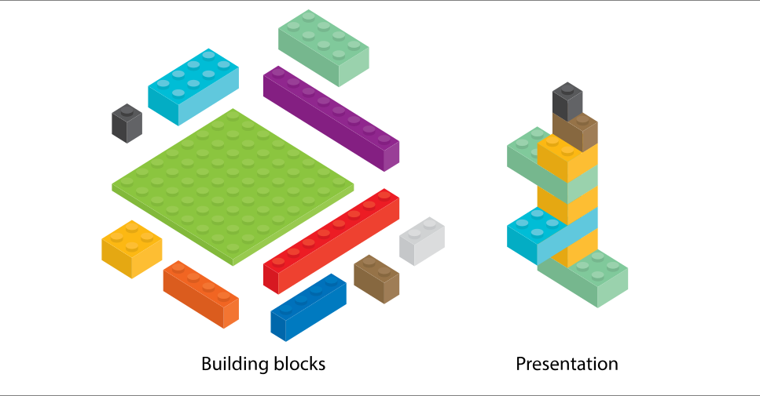

Strategies for
User-Centered Documentation
Created by Tom Johnson / @tomjohnson
idratherbewriting.com
Universal Principles of Design

Applicable Design Principles
| Confirmation | Consistency | Constraint |
| Control | Cost-benefit | Depth of processing |
| Design by committee | Desire line | Entry point |
| Errors | Forgiveness | Feedback loop |
| Fitts' Law | Five Hat Racks | Freeze-Flight-Fight-Forfeit |
| Hierarchy of Needs | Highlighting | Iconic Representation |
| Immersion | Interference Effects | Inverted Pyramid |
| Iteration | Legibility | Modularity |
| Shaping | Normal Distribution | Performance Load |
| Picture Superiority Effect | Redundancy | Readability |
| Signal-to-Noise Ratio | Storytelling | Wayfinding |
My approach
- Plug into design vocab
- Apply it to documentation
- Group the principles logically
- Evaluate the principles against help content
Grouping the design principles
- What to write
- How to organize it
- The way to write it
1. What to write
Signal-to-Noise Ratio
Focus the users' attention on what matters by reducing extraneous information. Eliminate content that is merely "noise" as opposed to meaningful information.
Normal Distribution
Document what most users need to know, and omit info that applies to only a small percentage of users (edge cases or obvious information). Adding it into the main doc dilutes the information for the majority.
Personas
Create fictitious descriptions of users based on real research to guide decision-making about design. These personas help you remember that you're not the user. Three primary personas and four secondary personas are sufficient.
How to organize it
Five Hat Racks
You can organize content in 5 ways:
- Alphabet
- Time
- Location
- Continuum (degree)
- Category (likeness)
Generally, doc is grouped by category more than location (except with context-sensitive help). Tags can facilitate multiple organization schemes.
Five Hat Racks Example

Faceted classification
One proposed solution to the problem of organization is faceted classification. See my presentation, Making Content More Findable When users Browse and Search for more details. See also David Weinberger's works.
Hierarchy
A hierarchical outline of the content (with parent and child items organized in trees) helps users both understand and visualize complex information.
Hierarchies that are too complex, or which hide parent-child displays, fail to communicate. Find a balance that allows users to take in the hierarchy at a glance in a meaningful way.
Hierarchy provides meaning
Navigation provides a narrative for people to follow on the web.
— James Kalbach, Designing Web Navigation: Optimizing the User Experience
Google hierarchy example

AWS hierarchy example

Hierarchy best practices
- Limit navigation (hierarchy) to 3 levels, placed on left
- Allow users to see the full navigation menu at a glance
- Break up massive navigation into multiple menus
- Provide a way to navigate from one nav menu to another
- Put page-level navigation on the page, preferably on right
Modularity
Break up help content into independent topics that can be viewed, understood, and updated independent of the whole. A topic or chunk should not be so interconnected with the whole that it cannot stand on its own.
Users read non-sequentially
You can just read the sections about the tasks you want to do.— John Carroll, The Nurnberg Funnel
Modularity is great. Where do things go wrong?
1. Don't assume building blocks are presentation
2. Don't auto-burst print books based on h2

"Frankenbooks": Modularity gone wrong
A Frankenbook is organized neither for linear reading, nor for random access. No matter where you land in it, you are in the middle of a maze with buttons to move up, down, or sideways, but no means of finding the end of any thread of narrative, great or small. Every page is page 297 and none of them answer your question .... .— Mark Baker, Every Page Is Page One
Strategy: Treat "Every Page Is Page One"

Strategy: Create self-contained topics

Strategy: Provide context before

Strategy: Provide context after

Modularity best practices
- Make topics meaningful enough to stand on their own
- Don't be afraid to make long topics
- Assume users might be starting at that page
- Provide any necessary context (prereqs, assumptions) at the beginning of the topic
Cost-Benefit
Users apply a cost-benefit analysis to reading documentation. Is it worth spending hours in the documentation for the benefit?
Performance Load
The larger the documentation, the greater the performance load will be on the user. With greater performance load, the user's chance of success decreases
Hierarchy of Needs
Users need to understand the basics before moving on to advanced topics. Give an advanced user tips on how to run before the user knows how to walk doesn't meet the user's needs.
Strategy: Quick reference guides
Instead of eliminating potentially useful info, provide quick reference guides that help users get oriented quickly with minimal cognitive load and low cost.
What are quick reference guides
- Differs from getting started
- Main tasks described in compressed, poetry-like form
- Like cliff notes or cheat sheet
- Especially helpful for lists of functions, classes, methods
Quick reference guides example

Quick reference guide layouts